Nossos Projetos
Sementes do Amanhã
Voltado para crianças de 4 a 17 anos, esse projeto oferece aulas de reforço escolar, atividades de alfabetização, apoio pedagógico e recreação lúdica. O objetivo é reduzir a evasão escolar, melhorar o desempenho dos alunos e despertar o gosto pelo aprendizado desde cedo. As aulas acontecem no contraturno escolar, com acompanhamento individualizado e merenda inclusa.
Mulheres em Ação
Capacitação profissional e empoderamento feminino são os pilares deste projeto. Oferecemos oficinas práticas de costura, culinária, estética e empreendedorismo para mulheres em situação de vulnerabilidade social. O foco é garantir autonomia financeira, autoestima e acesso a novas oportunidades de renda, por meio de mentorias, certificações e feiras locais para venda dos produtos criados pelas participantes.
Cultura que Transforma
Com oficinas gratuitas de dança, teatro, música e grafite, este projeto proporciona aos jovens da periferia um espaço seguro para expressarem suas identidades, talentos e realidades. Além das aulas, os participantes se envolvem em apresentações públicas, festivais culturais e produção de conteúdos autorais. A cultura aqui é usada como ferramenta de inclusão, diálogo e transformação social.
Saúde na Comunidade
Em parceria com profissionais da área da saúde, realizamos atendimentos voluntários, campanhas de prevenção (como vacinação, exames de rotina e orientações sobre higiene e saúde mental) e distribuímos kits de higiene e autocuidado. O projeto busca aproximar serviços essenciais de saúde das comunidades com pouco acesso a atendimentos médicos regulares.
Amigos de Patas
Este projeto tem como objetivo promover o bem-estar de animais em situação de rua, através de ações de resgates, castração, vacinação e doação de alimentos. Além disso, oferece oficinas sobre cuidado e adoção responsável de animais, estimulando a educação ambiental e a empatia. Voluntários podem participar ativamente no cuidado e socialização dos animais resgatados, enquanto a comunidade é incentivada a adotar práticas conscientes para garantir um futuro melhor para os animais.
Galeria dos Projetos
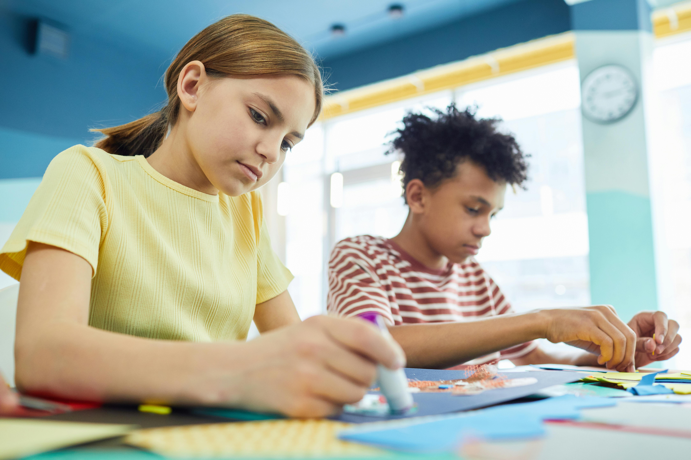
.jpg)
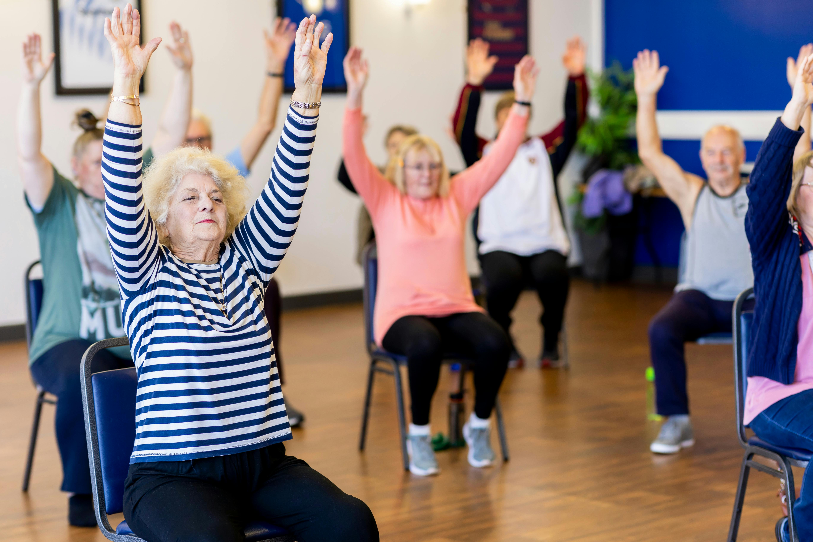
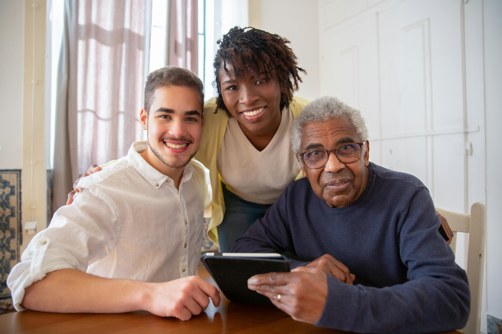
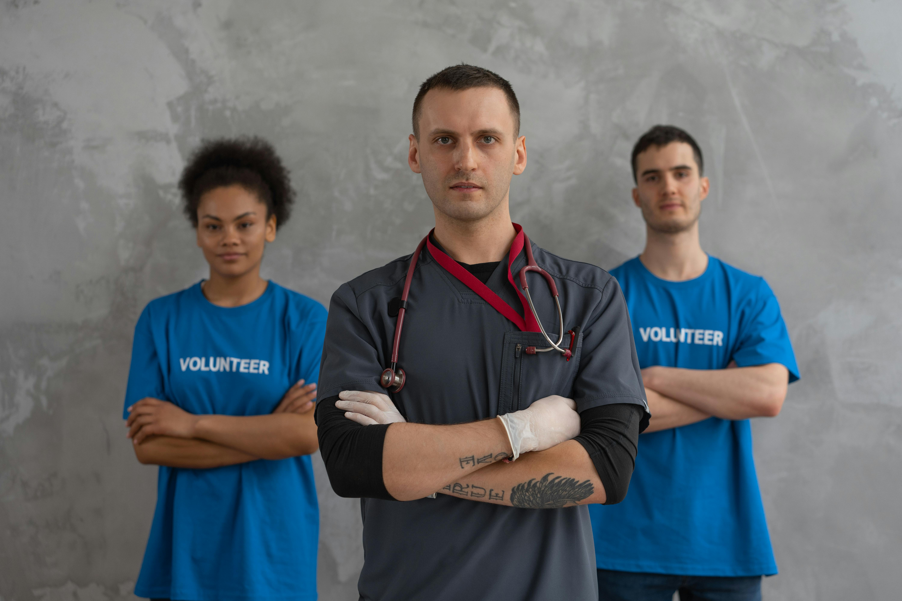
.jpg)
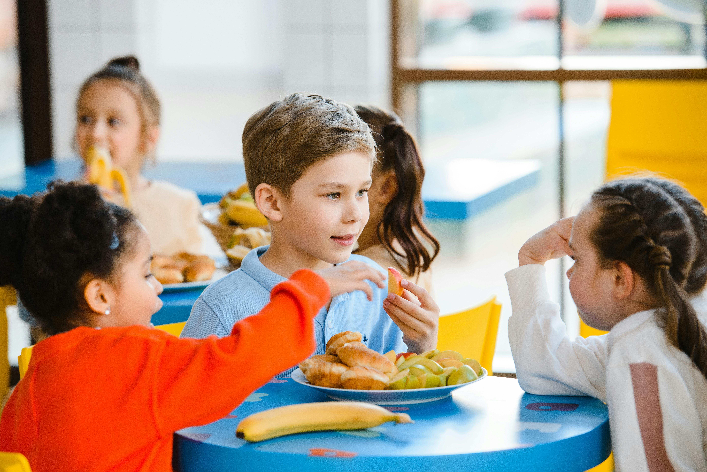
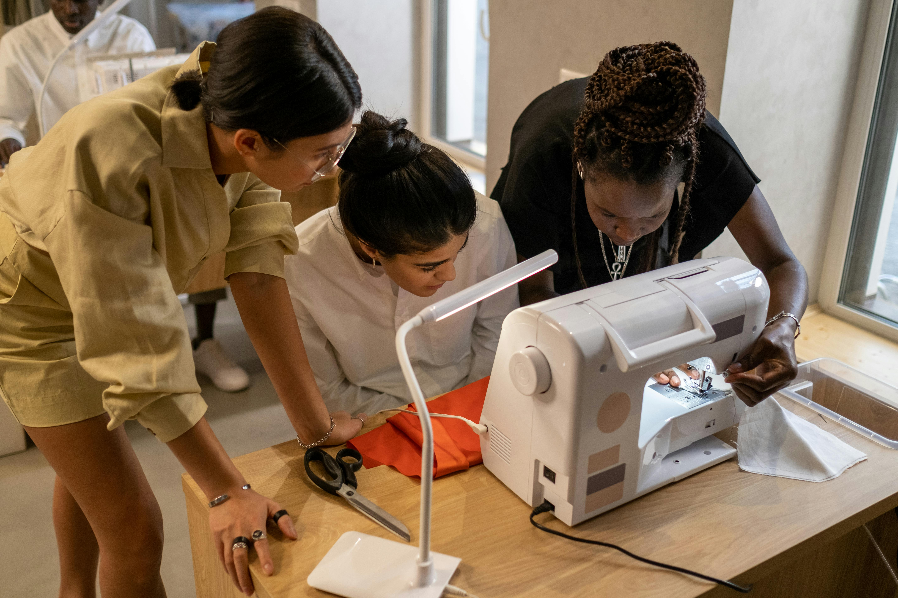
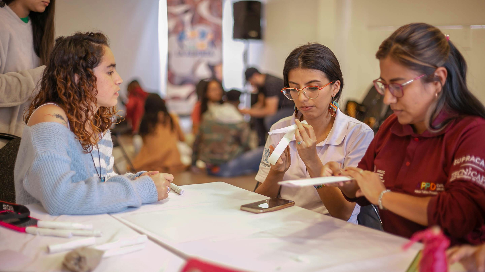
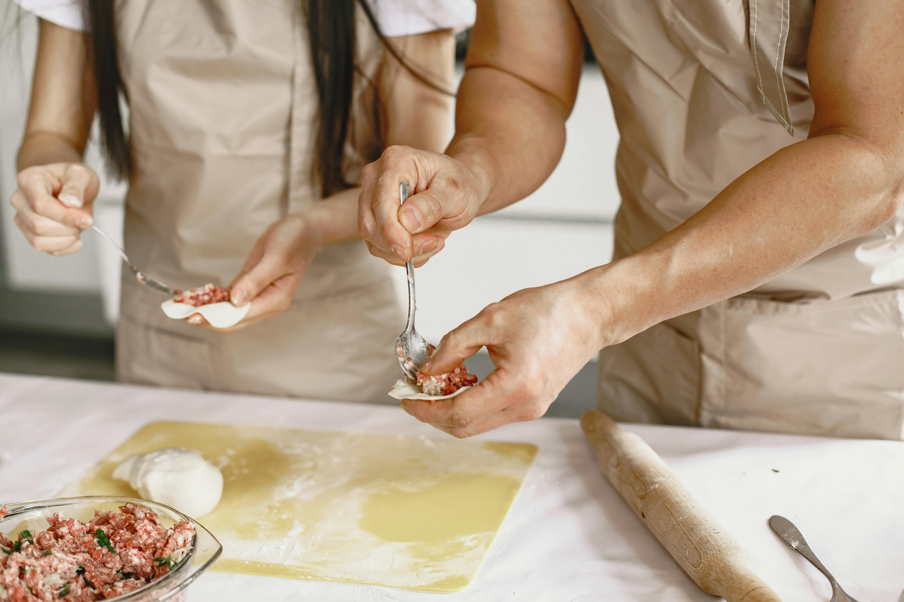
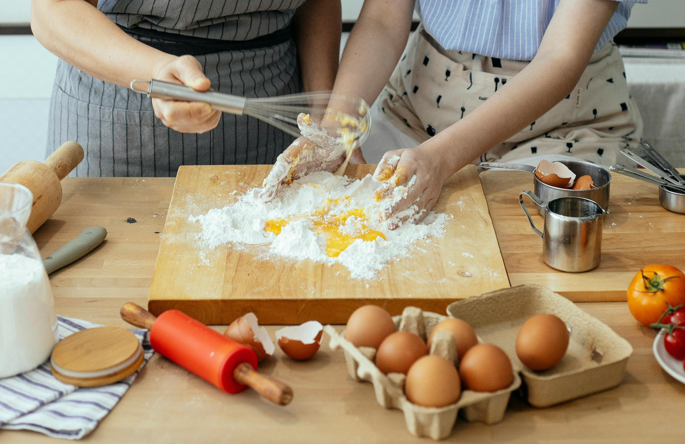
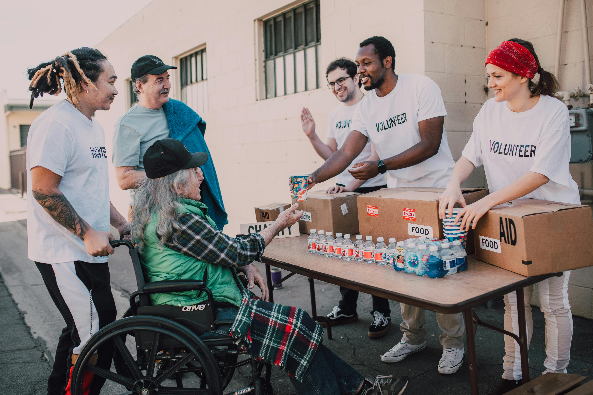
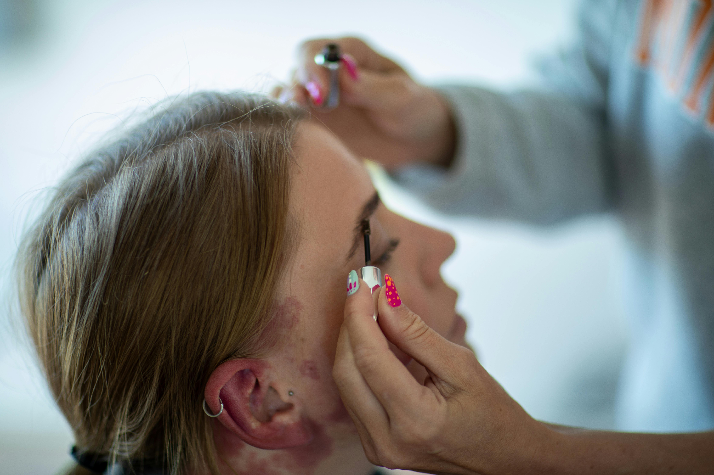
.jpg)
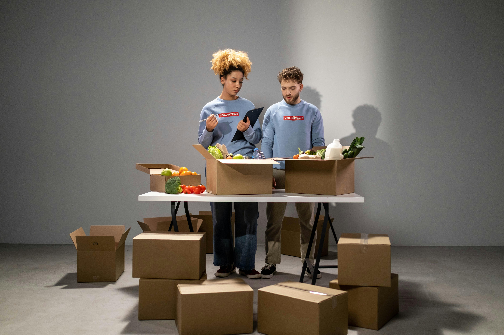
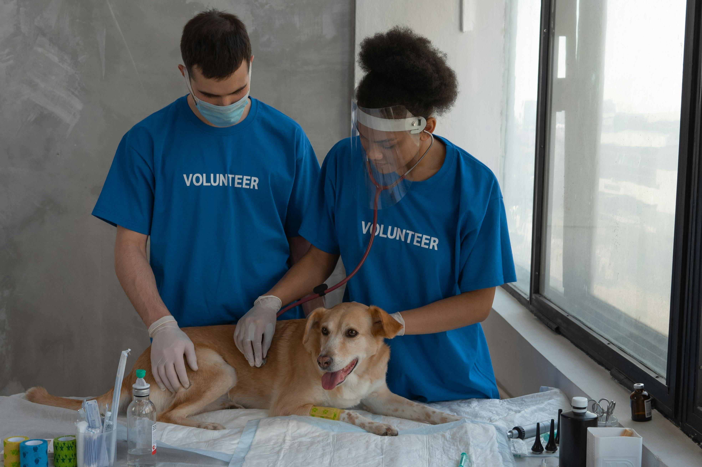
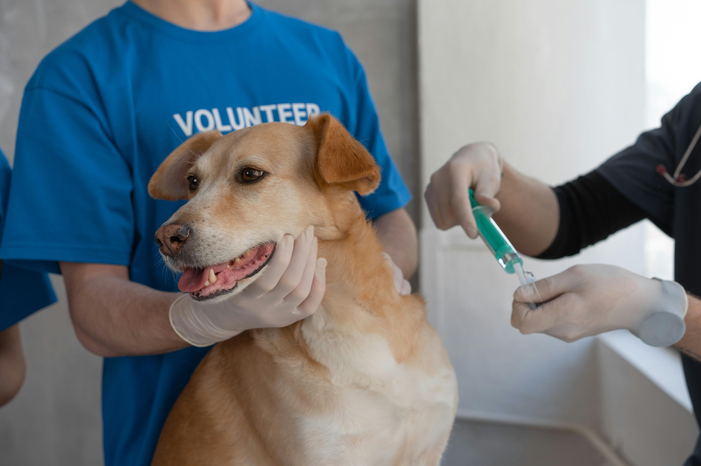
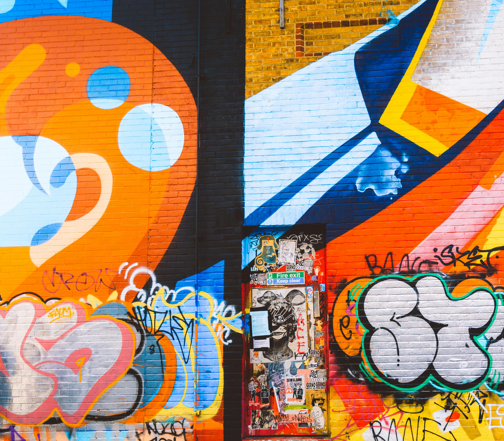